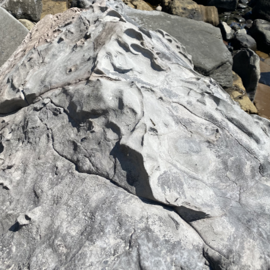
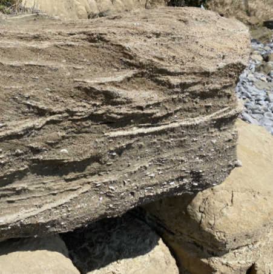
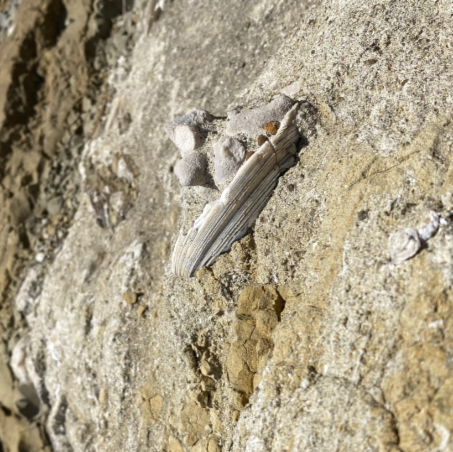

[사진1. 제주도 구성]
제주도는 크게, 위에서부터 용암층, 서귀포층, u층, 기반암으로 이루어져 있다. 이 때 물은 대부분 현무암으로 이루어진 용암층을 통과하지만 약 200만년에서 50만년 사이에 대부분 사암과 이암 등으로 형성된 서귀포층은 통과하지 못해서 제주도로 내린 비 등이 대부분 서귀포층에 고이게 된다. 이렇게 1년동안 고이는 무링 총 16억 4백만톤(3) 정도 된다고 한다. 이렇게 고인 물들, 즉 지하수를 추출해서 몇 가지 작업을 거친 후 우리가 마실 수 있도록 한 것이 삼다수인데 이러한 서귀포층이 겉으로 나와있는 곳이 서귀포층 패류 화석산지라고 한다.
[사진2. 사암(추정)]

[사진3. 유문암(추정)]

[사진4. 셰일(추정)과 패류화석]

[사진5. 패류화석]
서귀포층에는 사암과 유문암으로 추정되는 암석들이 많이 분포해있었다. 이와 동시에 셰일로 추정되는 암석에 수많은 패류화석들이 있었다. 이러한 패류들을 직접적으로 볼 수 있는 곳은 제주도에서는 서귀포층 패류화석산지밖에 없으며 다른 곳에서는 수백미터 이상 시추해야만 이러한 서귀포층을 볼 수 있다.
[사진6. 서귀포층 형성 과정]

[사진7. 서귀포층]
서귀포층 패류화석산지는 약 40만년 전 제주도 남쪽 부근이 전체적으로 솟아오르며 이렇게 서귀포층이 해수면 위로 올라와 서귀포층을 직접 볼 수 있게 되었으며 천지연 폭포, 정방폭포 등 비슷한 이유로 형성되었다고 한다.(4) 이렇게 형성된 서귀포층이 파도에 의해 깎이며 1km 이상 다양한 패류화석과 암석들이 펼쳐져 있다.
결과 및 느낀점: 초등학교 때 제주도는 오직 현무암으로만 이루어진 섬으로 배우고 지금까지 그렇게 알고 있었지만 사암, 셰일, 안산암 등 다양한 암석들이 있다는 것을 알게 되었다. 그리고 나와 매우 멀리 있는 것 같은, 수백만년 된 화석이 생각보다 쉽게 보이고 가깝게 있다는 것을 느꼈으며 우리가 일반적으로 먹는 지하수는 이러한 서귀포층 덕분에 가능하다는 것을 알게 되어서 매우 고맙다고 느낀다. 하지만 서귀포층 제주도민의 삶에 가장 밀접한 영향을 미치는 패류화석산지를 직접 답사해도 궁금한 점이 몇가지 있다.